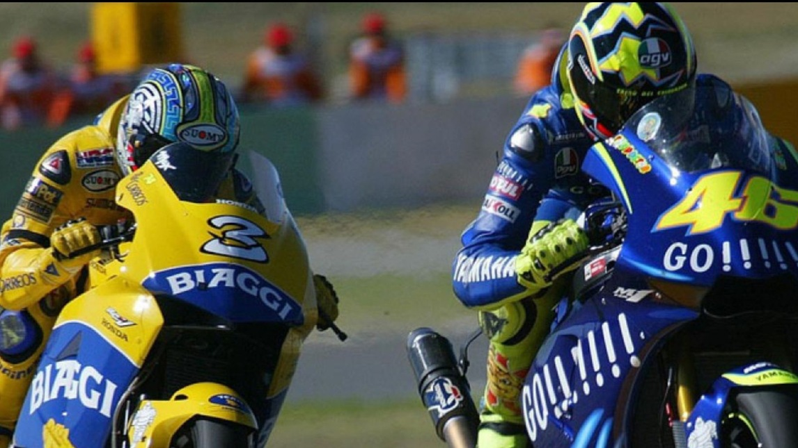

2004-WELKOM  Il Dottore ricorda con piacere quella prima vittoria in Yamaha in Sudafrica al termine di un epico duello con Max Biaggi. “E’ stata una vittoria speciale, mi davano del pazzo quando ho lasciato Honda” Ci sono delle gare che restano nel cuore dei piloti anche a distanza di anni. E’ il caso di Valentino Rossi che indica la gara di Welkom del 2004, la prima in Yamaha dopo il passaggio dalla Honda, come la sua gara migliore. Le più grandi imprese di Valentino 20 anni di carriera del numero 46 raccontati da lui stesso con delle clip imperdibili per i veri appassionati.